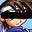
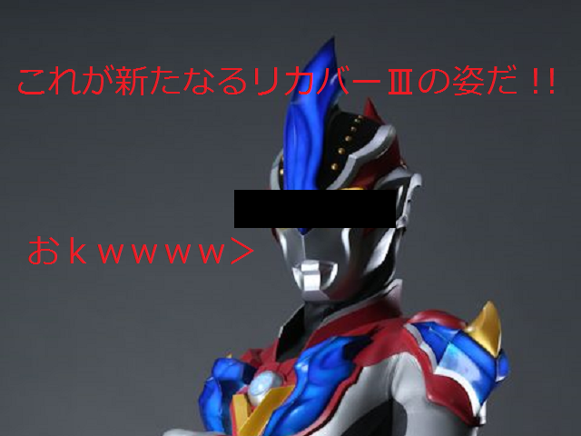

 |
|
 |
|
| 作者：mikopan | |
| ジャンル：そこから先はキミの目で確かめるんだ！ | |
| ツクール：2000 | |
| 作者コメント： ピポポポポ・・・ヒゥンヒゥンヒゥン・・・ゼッ・・・トォォォン・・・ ヒゥンヒゥン・・・ゼットォォォン・・・ピポポポポ・・・ 以下、大してありがたくない日本語訳 本格的にｔｋり始めたのは一昨日からだから間に合う気が微塵もしない。 実はssもついさっき(エントリー申し込みちょっと前)にやっつけでやった。 さてここで問題です。 モチベはあるのにネタがないッ・・・ こんなときはどんなｋｓｇをｔｋるべきでしょうか？ ヒント：去年のGWで俺が何を言われていたか |
|
| 管理人コメント： 「ちゃんとしたssを作った」って言いませんでした？ｗｗｗ |
|
| ダウンロード(4.87MB) / 感想掲示板 |
|
| 前の作品 / 次の作品 / TOPへ戻る | |